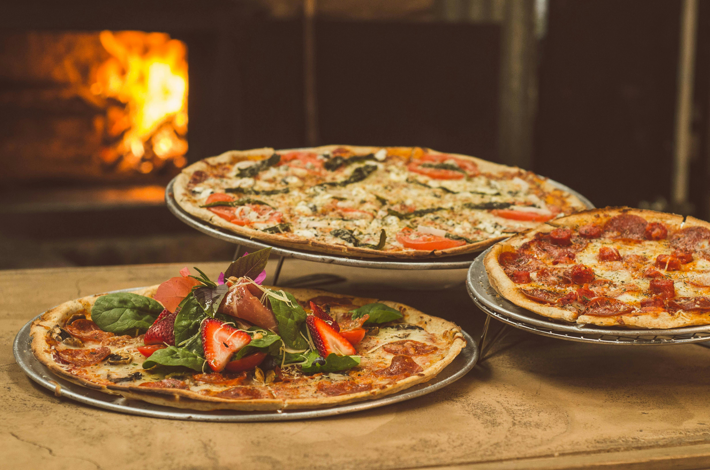
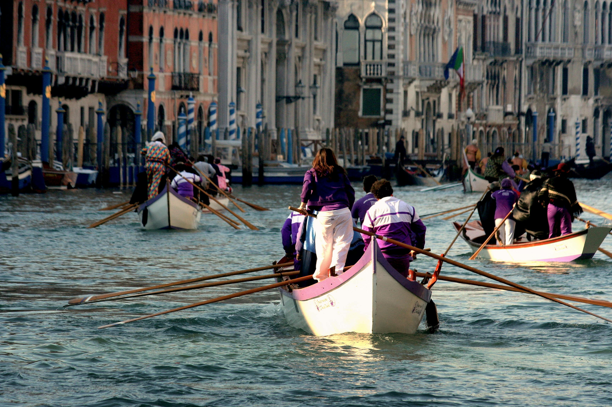
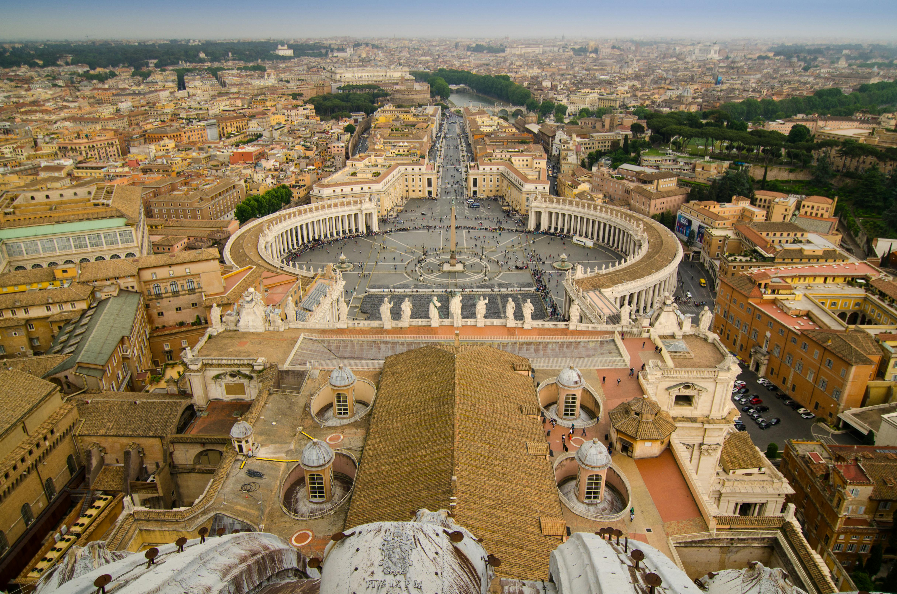
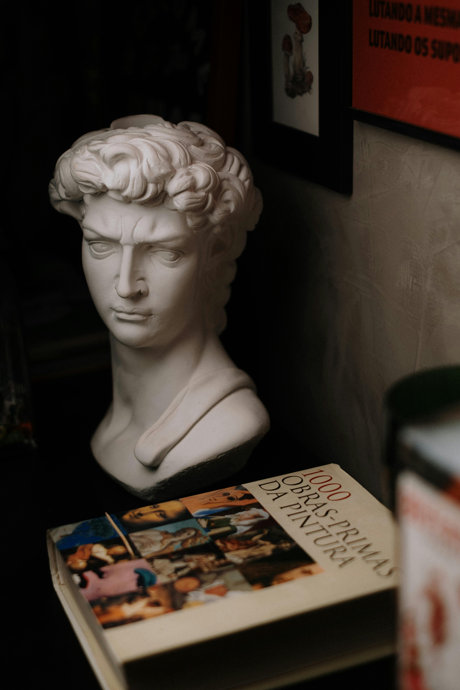
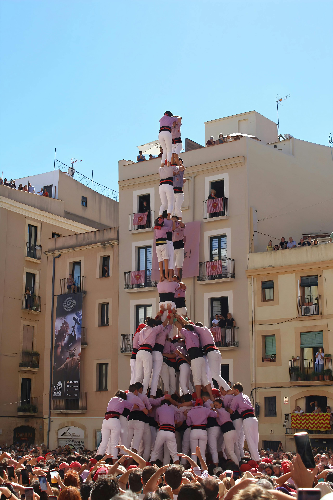

Introduction
Italy is one of the world's most popular travel destinations thanks to its mix of world-class cuisine, deeply layered history, vibrant culture, varied landscapes, and welcoming people. This page gives a concise overview and links to more detailed pages for each reason to visit.
1. Food & Drink
Italian cuisine is regionally diverse and globally beloved. From Neapolitan pizza to Tuscan wines and Sicilian pastries, food is central to Italian life. Explore local markets, family-run trattorie, and seasonal specialties.
Read more about Italian food & drink →

2. Activities & Experiences
Italy offers something for every traveler: art and museum tours, hiking in the Dolomites, sailing along the Amalfi Coast, cycling through the countryside, cooking classes, and wine tours. Whether you prefer relaxation or adventure, you'll find options.
Discover activities & experiences →

3. The Best City to Visit.
Choosing "the best" city depends on what you want, but Rome is arguably the best to visit because of its ancient history, major sights, remarkable food and activities and the general vibe.

4. History & Cultural Heritage
Italy is a cradle of Western civilization — Roman ruins, Renaissance masterpieces, Baroque churches, and UNESCO World Heritage sites are everywhere. History lovers can spend weeks visiting archaeological sites, museums, and historic neighborhoods.
Learn more about Italy's history & heritage →

5. Cultural Events & Festivals
Italy's calendar is packed with festivals: Carnevale in Venice, historical reenactments, food festivals (sagre), religious processions, opera seasons and film festivals. Timing a visit to coincide with a local festival can give you a memorable cultural experience.
Find notable cultural events & festivals →

Practical Travel Tips (brief)
- Language: Italian is the primary language; English is commonly spoken in tourist areas.
- Money: Euro (€). Credit cards are widely accepted, but carry cash for small vendors and markets.
- Transport: Extensive train network (Trenitalia, Italo), regional buses, and domestic flights for longer distances.
- Best time to visit: Spring (April-June) and autumn (September-October) for pleasant weather and fewer crowds.
- Etiquette: Dress modestly in religious sites, and try to learn a few Italian phrases — locals appreciate it.